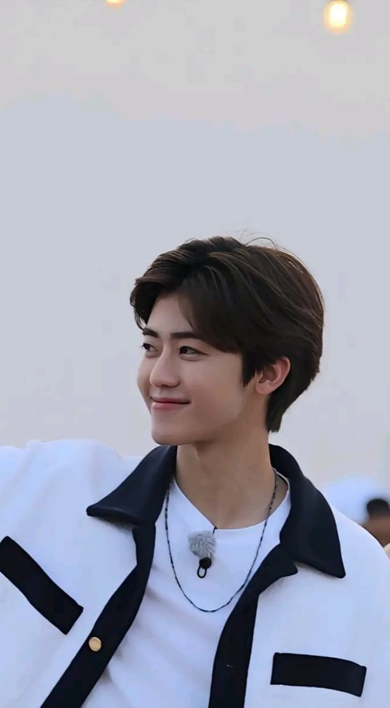

|

|
Na Jaemin adalah salah satu member NCT Dream yang berasal dari Korea Selatan.
Ia lahir pada 13 Agustus 2000 di Jeonju dan bergabung dengan SM Entertainment pada tahun 2013
sebagai trainee sebelum akhirnya debut bersama NCT Dream pada 25 Agustus 2016. Posisi utamanya
di grup adalah lead dancer, sub rapper, dan sub vocalist, serta dikenal dengan julukan “Nana”
dari para penggemarnya. Jaemin memiliki hobi fotografi, mengedit video, dan menonton film,
serta sangat menyukai makanan manis, terutama es krim. Tingginya sekitar 177 cm, dan ia pernah
mengambil hiatus pada tahun 2017 karena masalah kesehatan di punggungnya.
Jaemin dikenal sebagai sosok yang penuh semangat, humoris, dan ramah. Ia mudah berbaur dengan orang baru,
sering membuat suasana grup menjadi ceria, dan selalu peduli terhadap fans maupun sesama member.
Jaemin memiliki senyum khas yang mempesona, cara berbicara yang lembut, dan sering menjadi mood booster
di NCT Dream. Banyak orang mengatakan bahwa ia memiliki aura hangat dan menenangkan.
|